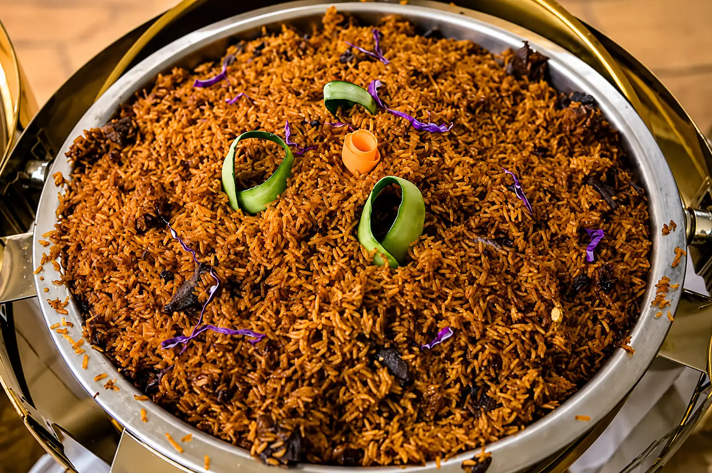
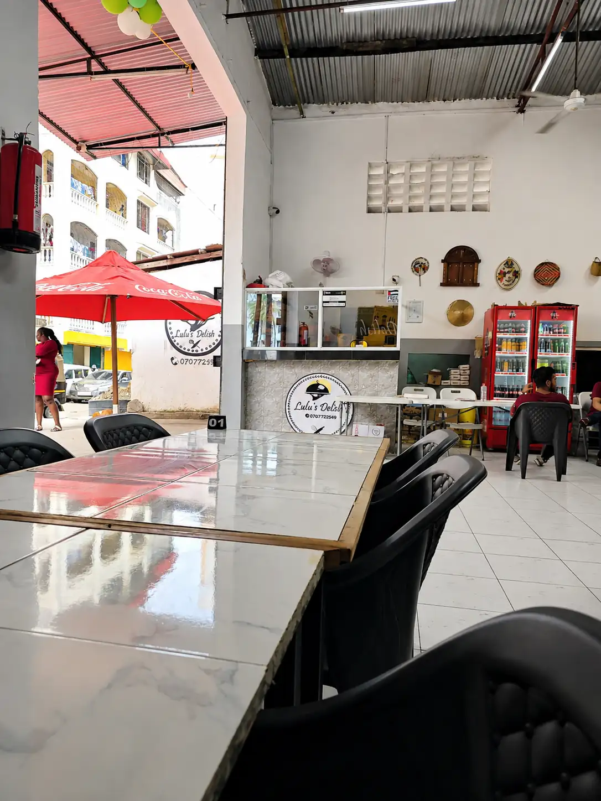
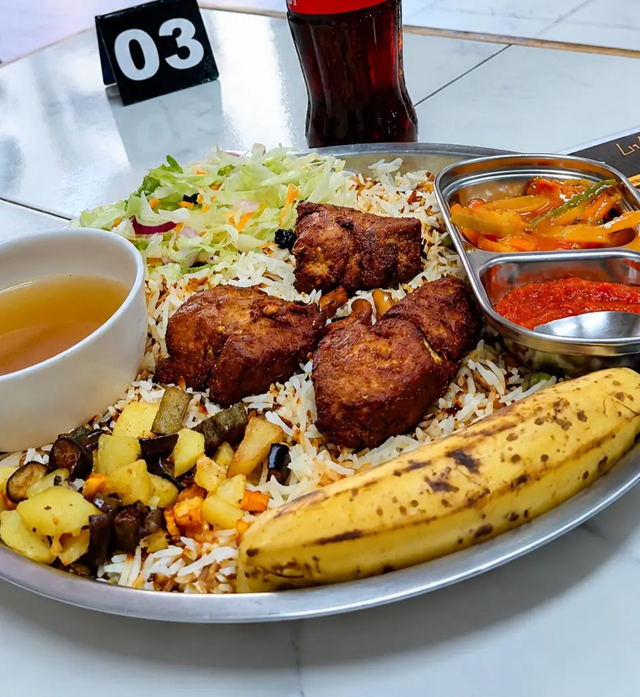
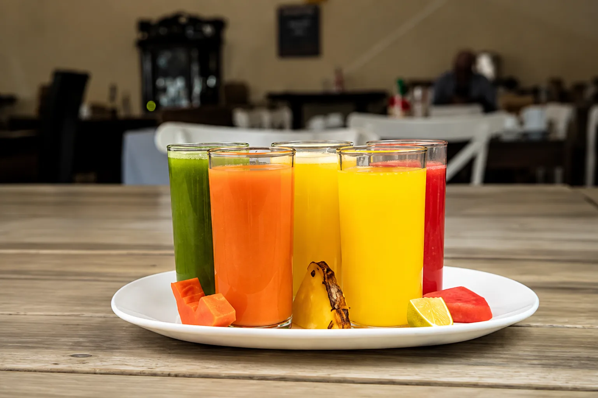

A little look around
Food first.
Everything else follows.
From the first breakfast plates to a table full at lunchtime, this is Lulu's Delish. Fresh food, generous portions and the easy rhythm of a family restaurant in Majengo.
Coastal food.
Everyday hospitality.
Mombasa.

From the kitchen
Plates worth
slowing down for.
Biryani, pilau, mahamri, mbaazi, slow-cooked meats and the flavours that make coastal cooking feel like home.







Morning at Lulu's
Start the day
properly.
Warm mahamri, mbaazi, mutton soup and fresh juice. Breakfast at Lulu's Delish is generous, familiar and made for taking your time over.
See the breakfast menuAround the restaurant
Come for the food.
Stay for the feeling.


Find us in Mombasa
Hungry yet?
We're on Narok Road in Majengo. Monday to Friday, 9am–5pm.